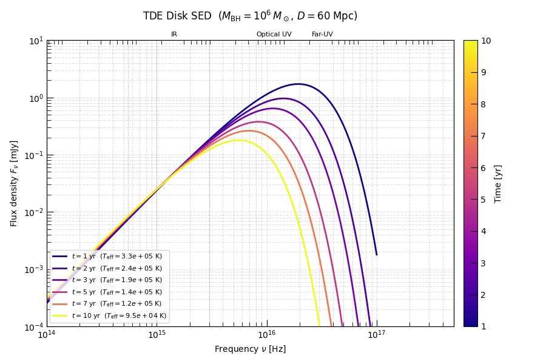
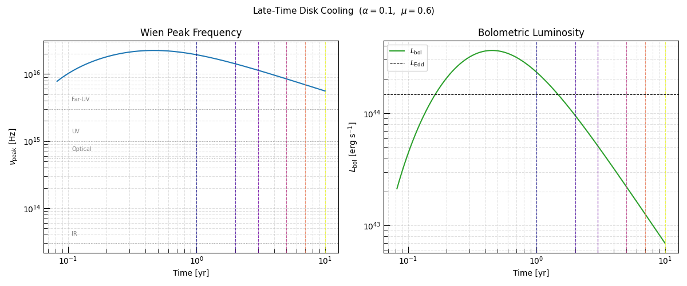

Note
Go to the end to download the full example code.
Late-Time Broadband SED Evolution of a TDE Accretion Disk#
After a tidal disruption event (TDE), the half of the stellar debris that remains bound to the black hole circularises into an accretion disk at roughly twice the tidal radius:
The disk then evolves viscously, draining mass inward and spreading angular momentum outward. During the late-time phase (years after disruption) the fallback rate has dropped well below the Eddington rate and the disk enters the sub-Eddington, gas-pressure-dominated regime modelled here.
This example translates the two fundamental one-zone disk observables — effective surface temperature \(T_{\rm eff}(t)\) and outer radius \(R_D(t)\) — into broadband spectral energy distributions at several late-time epochs. Within the single-zone approximation the disk radiates as a uniform blackbody from both faces; the spectral flux density at luminosity distance \(D\) is
and integrating over frequency recovers the bolometric luminosity
As the disk evolves at late times:
\(R_D\) grows as angular momentum is transported outward.
\(T_{\rm eff}\) falls as the viscous heating rate decreases.
The SED peak reddens via Wien’s law, sweeping from the UV into the optical and eventually the near-IR over years.
Physical Scenario#
We model the late-time disk following the disruption of a Solar-type star by
a \(10^6\,M_\odot\) black hole at a distance of \(D = 60\;\text{Mpc}\),
a typical configuration for UV/optical TDE surveys. The disk begins at the
circularization radius with a total mass of \(M_{D,0} = 1\,M_\odot\).
We use
GasPressureDisk
throughout, which is appropriate once the system has settled into the
sub-Eddington thin-disk regime.
See Also#
tde_disk_observables — TDE disk luminosity and Eddington ratio
Hint
For the super-Eddington early phase of TDE disk evolution, see the
AdvectiveDisk
gallery (tde_disk_observables).
Setup#
Import the disk model, the new gravity utilities, and Astropy’s
BlackBody for evaluating the Planck function.
import matplotlib.pyplot as plt
import numpy as np
from astropy import constants as const
from astropy import units as u
from astropy.modeling.models import BlackBody
from matplotlib.cm import ScalarMappable
from matplotlib.colors import Normalize
from trilobite.dynamics.accretion.one_zone import GasPressureDisk
from trilobite.physics_utils import compute_ISCO, compute_tidal_radius
from trilobite.utils.plot_utils import set_plot_style
set_plot_style()
Physical Parameters#
We adopt a canonical TDE configuration: a Solar-type star disrupted by a \(10^6\,M_\odot\) supermassive black hole. The key radii are derived directly from the physical parameters:
The initial disk radius is set to the canonical circularization radius \(R_{D,0} = 2\,R_T\).
M_BH = 1.0e6 * const.M_sun # supermassive black hole
M_star = 1.0 * u.Msun # disrupted star mass
R_star = 1.0 * u.Rsun # disrupted star radius
alpha = 0.1 # Shakura-Sunyaev viscosity parameter
mu = 0.6 # mean molecular weight (fully ionised solar composition)
D_source = 60.0 * u.Mpc # luminosity distance
R_T = compute_tidal_radius(R_star, M_BH, M_star)
R_in = compute_ISCO(M_BH, spin=0.0)
R_D_0 = 2.0 * R_T # circularization radius
# Compute the fallback time
t_fb = ((np.pi / np.sqrt(2)) * np.sqrt(M_BH * R_star**3 / (const.G * M_star**2))).to(u.day)
M_fb_0 = ((1.0 / 5.0) * M_star / t_fb).to(u.Msun / u.yr)
print(f"M_BH = {M_BH.to(u.Msun):.2e}")
print(f"R_T = {R_T.to(u.au):.3f}")
print(f"R_D_0 = {R_D_0.to(u.au):.3f} (= 2 R_T)")
print(f"R_in = {R_in.to(u.au):.4f}")
print(f"D = {D_source}")
M_BH = 1.00e+06 solMass
R_T = 0.465 AU
R_D_0 = 0.930 AU (= 2 R_T)
R_in = 0.0592 AU
D = 60.0 Mpc
Model Instantiation and Initial Conditions#
We instantiate a
GasPressureDisk
and generate self-consistent initial conditions from
\((M_{D,0},\,R_{D,0})\). The initial disk mass is taken as the full
stellar mass \(M_\star\) — appropriate for the late-time phase where the
super-Eddington fallback has subsided and the disk mass is roughly conserved.
M_D_0 = 0.500 solMass
J_D_0 = 3.507e+55 cm2 g / s
Run the Integration#
We integrate from \(t_0 = 30\;\text{days}\) (after the disk has settled from the disruption event) to \(t_{\rm end} = 10\;\text{yr}\). This spans the observationally accessible late-time evolution seen in optical and UV TDE light curves.
result = disk.solve(
initial_conditions=ic,
runtime_parameters={
"M_BH": M_BH,
"R_in": R_in,
"alpha": alpha,
"M_fb_0": M_fb_0,
"t_fb": t_fb,
},
t_span=(30 * u.day, 10.0 * u.yr),
max_steps=2_000_000,
)
print(f"Integration complete — {result.n_steps:,} steps taken")
print(f"t_end = {result.data['t'][-1].to(u.yr):.2f}")
data = result.data
t_yr = data["t"].to(u.yr).value
Integration complete — 1,081,068 steps taken
t_end = 10.00 yr
Select Late-Time Snapshots#
We sample six epochs at \(t = 1, 2, 3, 5, 7, 10\;\text{yr}\) and colour them with a sequential colourmap so the temporal ordering reads left to right in the legend. Each epoch records the disk radius and effective temperature at the nearest integration step.
epoch_years = [1, 2, 3, 5, 7, 10]
cmap = plt.cm.plasma
norm = Normalize(vmin=epoch_years[0], vmax=epoch_years[-1])
T_eff_arr = data["T_eff"].to(u.K).value
R_D_arr = data["R_D"].to(u.cm).value
snapshots = []
for yr in epoch_years:
idx = np.argmin(np.abs(t_yr - yr))
snapshots.append(
{
"t_yr": t_yr[idx],
"T_eff": T_eff_arr[idx] * u.K,
"R_D": R_D_arr[idx] * u.cm,
"color": cmap(norm(yr)),
}
)
print(f"{'Epoch':>8} {'T_eff [K]':>12} {'R_D [au]':>10}")
for s in snapshots:
print(f"{s['t_yr']:>7.2f} yr {s['T_eff'].value:>12.2e} {s['R_D'].to(u.au).value:>10.3f}")
Epoch T_eff [K] R_D [au]
1.00 yr 3.30e+05 0.496
2.00 yr 2.42e+05 0.593
3.00 yr 1.94e+05 0.675
5.00 yr 1.44e+05 0.806
7.00 yr 1.18e+05 0.910
10.00 yr 9.49e+04 1.040
Broadband SED at Six Late-Time Epochs#
For each snapshot we evaluate the single-temperature blackbody flux density:
The factor \(\pi\,B_\nu\) converts the per-steradian Planck function to a hemispherical surface radiance; the additional \(\pi R_D^2 / (2 D^2)\) accounts for both disk faces and the geometric dilution at distance \(D\).
At these late epochs the peak sweeps from the far UV into the optical, making TDE disks prime targets for UV/optical transient surveys.
nu = np.geomspace(1e12, 1e17, 1000) * u.Hz # mid-IR through far UV
D_cm = D_source.to(u.cm)
# Band reference frequencies
BANDS = {
"IR": 3.0e13 * u.Hz,
"Optical": 5.5e14 * u.Hz,
"UV": 1.0e15 * u.Hz,
"Far-UV": 3.0e15 * u.Hz,
}
fig, ax = plt.subplots(figsize=(9, 6))
for s in snapshots:
bb = BlackBody(temperature=s["T_eff"])
B_nu = bb(nu) # erg s⁻¹ cm⁻² Hz⁻¹ sr⁻¹
F_nu = (np.pi * u.sr * s["R_D"] ** 2 * B_nu / (2.0 * D_cm**2)).to(u.mJy)
ax.loglog(
nu.to(u.Hz).value,
F_nu.value,
color=s["color"],
lw=2.0,
label=rf"$t = {s['t_yr']:.0f}\;\mathrm{{yr}}$ "
rf"($T_{{\rm eff}} = {s['T_eff'].value:.1e}\;\mathrm{{K}}$)",
)
# Band markers
for band_name, nu_b in BANDS.items():
ax.axvline(nu_b.to(u.Hz).value, color="grey", ls=":", lw=0.9, alpha=0.6)
# Colorbar for time
sm = ScalarMappable(norm=norm, cmap=cmap)
sm.set_array([])
cbar = fig.colorbar(sm, ax=ax, pad=0.02)
cbar.set_label("Time [yr]", fontsize=10)
# Band labels along the top x-axis
ax_top = ax.twiny()
ax_top.set_xscale("log")
ax_top.set_xlim(ax.get_xlim())
ax_top.set_xticks([nu_b.to(u.Hz).value for nu_b in BANDS.values()])
ax_top.set_xticklabels(list(BANDS.keys()), fontsize=8)
ax_top.tick_params(length=0)
ax.set_xlabel(r"Frequency $\nu$ [Hz]")
ax.set_ylabel(r"Flux density $F_\nu$ [mJy]")
ax.set_title(
rf"TDE Disk SED "
rf"($M_{{\rm BH}} = 10^6\,M_\odot$, "
rf"$D = {int(D_source.value)}\;\mathrm{{{D_source.unit}}}$)",
pad=24,
)
ax.legend(fontsize=8, loc="lower left")
ax.grid(True, which="both", ls="--", alpha=0.4)
ax.set_ylim([1e-4, 1e1])
ax.set_xlim([1e14, 5e17])
plt.tight_layout()
plt.show()

Wien Peak and Bolometric Luminosity#
The Wien peak frequency tracks the disk’s cooling directly:
The bolometric luminosity \(L = 2\pi R_D^2\,\sigma_{\rm SB}\,T_{\rm eff}^4\) decreases more slowly than \(T_{\rm eff}^4\) alone because the expanding disk area \(\propto R_D^2\) partially offsets the cooling. The epoch markers (vertical dashed lines) correspond to the six SEDs above.
T_eff_full = data["T_eff"].to(u.K)
R_D_full = data["R_D"].to(u.cm)
nu_peak = (2.82 * const.k_B * T_eff_full / const.h).to(u.Hz)
L_bol = (2.0 * np.pi * R_D_full**2 * const.sigma_sb * T_eff_full**4).to(u.erg / u.s)
fig, axes = plt.subplots(1, 2, figsize=(12, 5))
# ---- Wien peak frequency ----
axes[0].loglog(t_yr, nu_peak.value, color="C0", lw=1.5)
for band_name, nu_b in BANDS.items():
axes[0].axhline(nu_b.to(u.Hz).value, color="grey", ls=":", lw=0.8, alpha=0.6)
axes[0].text(t_yr[0] * 1.3, nu_b.to(u.Hz).value * 1.25, band_name, fontsize=7, color="grey", va="bottom")
for s in snapshots:
axes[0].axvline(s["t_yr"], color=s["color"], ls="--", lw=0.9, alpha=0.8)
axes[0].set_xlabel("Time [yr]")
axes[0].set_ylabel(r"$\nu_{\rm peak}$ [Hz]")
axes[0].set_title("Wien Peak Frequency")
axes[0].grid(True, which="both", ls="--", alpha=0.4)
# ---- Bolometric luminosity ----
L_Edd = (4.0 * np.pi * const.G * M_BH * const.c / (0.34 * u.cm**2 / u.g)).to(u.erg / u.s)
axes[1].loglog(t_yr, L_bol.value, color="C2", lw=1.5, label=r"$L_{\rm bol}$")
axes[1].axhline(L_Edd.value, color="k", ls="--", lw=0.8, label=r"$L_{\rm Edd}$")
for s in snapshots:
axes[1].axvline(s["t_yr"], color=s["color"], ls="--", lw=0.9, alpha=0.8)
axes[1].set_xlabel("Time [yr]")
axes[1].set_ylabel(r"$L_{\rm bol}$ [erg s$^{-1}$]")
axes[1].set_title("Bolometric Luminosity")
axes[1].legend(fontsize=9)
axes[1].grid(True, which="both", ls="--", alpha=0.4)
fig.suptitle(
rf"Late-Time Disk Cooling ($\alpha = {alpha}$, $\mu = {mu}$)",
fontsize=11,
)
plt.tight_layout()
# sphinx_gallery_thumbnail_number = 1
plt.show()

Total running time of the script: (0 minutes 4.092 seconds)